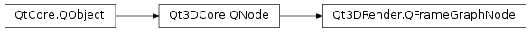

Qt3DRender.QFrameGraphNode¶
Inherited by: Qt3DRender.QTechniqueFilter, Qt3DExtras.QForwardRenderer, Qt3DRender.QClearBuffers, Qt3DRender.QNoDraw, Qt3DRender.QSortPolicy, Qt3DRender.QLayerFilter, Qt3DRender.QRenderPassFilter, Qt3DRender.QRenderStateSet, Qt3DRender.QRenderSurfaceSelector, Qt3DRender.QRenderTargetSelector, Qt3DRender.QFrustumCulling, Qt3DRender.QProximityFilter, Qt3DRender.QViewport, Qt3DRender.QDispatchCompute, Qt3DRender.QRenderCapture, Qt3DRender.QBlitFramebuffer, Qt3DRender.QBufferCapture, Qt3DRender.QMemoryBarrier, Qt3DRender.QCameraSelector
Synopsis¶
Functions¶
- def
parentFrameGraphNode()
Detailed Description¶
Base class of all FrameGraph configuration nodes.
This class is rarely instanced directly since it doesn’t provide any frame graph specific behavior, although it can be convenient to use for grouping other nodes together in dynamic frame graphs. The actual behavior comes from the subclasses.
The subclasses are:
class description Qt3DRender.QCameraSelectorSelect camera from all available cameras in the scene Qt3DRender.QClearBuffersSpecify which buffers to clear and to what values Qt3DRender.QDispatchComputeSpecify Compute operation kernels Qt3DRender.QFrustumCullingEnable frustum culling Qt3DRender.QLayerFilterSelect which layers to draw Qt3DRender.QNoDrawDisable drawing Qt3DRender.QRenderPassFilterSelect which render passes to draw Qt3DRender.QRenderStateSetSet render states Qt3DRender.QRenderSurfaceSelectorSelect which surface to draw to Qt3DRender.QRenderTargetSelectorSelect which QRenderTargetto draw toQt3DRender.QSortPolicySpecify how entities are sorted to determine draw order Qt3DRender.QTechniqueFilterSelect which techniques to draw Qt3DRender.QViewportSpecify viewport Qt3DRender.QMemoryBarrierPlaces a memory barrier
-
class
PySide2.Qt3DRender.Qt3DRender.QFrameGraphNode([parent=nullptr])¶ Parameters: parent – PySide2.Qt3DCore.Qt3DCore::QNodeThe constructor creates an instance with the specified
parent.
-
PySide2.Qt3DRender.Qt3DRender.QFrameGraphNode.parentFrameGraphNode()¶ Return type: PySide2.Qt3DRender.Qt3DRender::QFrameGraphNodeReturns a pointer to the parent.
© 2018 The Qt Company Ltd. Documentation contributions included herein are the copyrights of their respective owners. The documentation provided herein is licensed under the terms of the GNU Free Documentation License version 1.3 as published by the Free Software Foundation. Qt and respective logos are trademarks of The Qt Company Ltd. in Finland and/or other countries worldwide. All other trademarks are property of their respective owners.